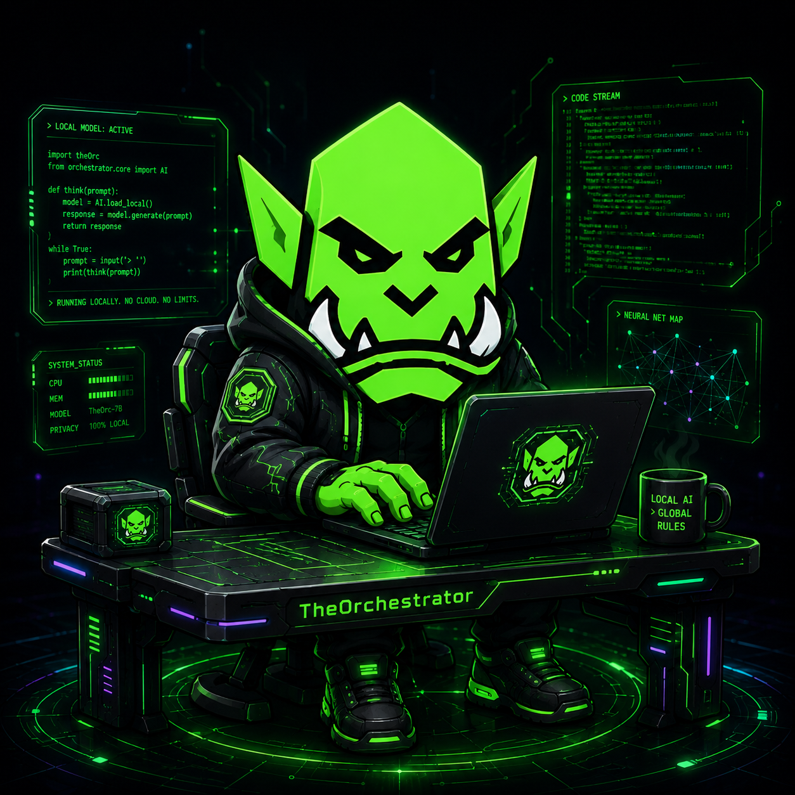
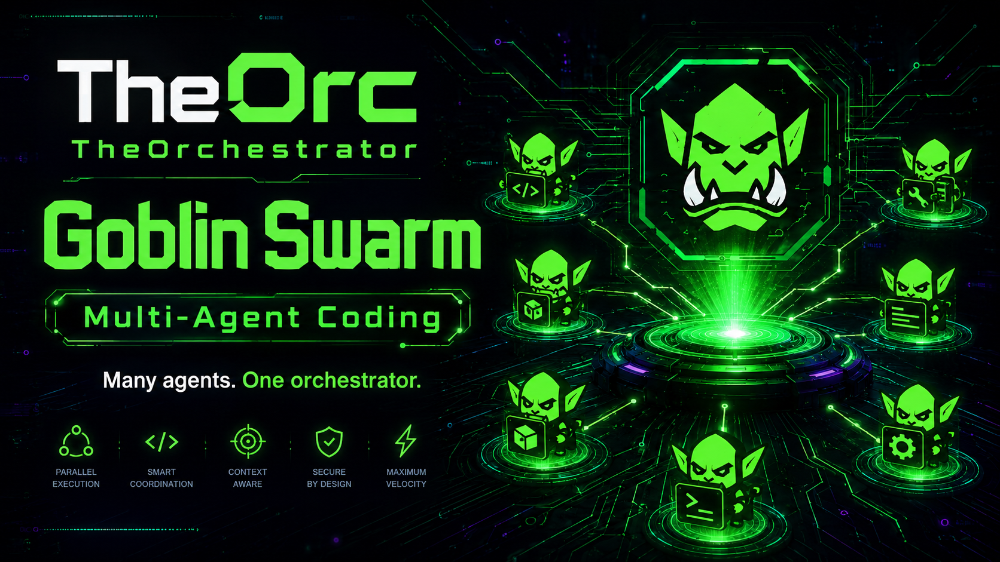

Propose
TheOrc, Control Room, CLI, and apps submit typed intent.
RUST CONTROL PLANE · C++ ESP32 FIRMWARE
OrcLink is the policy-gated control plane between AI intent and real hardware. Apps ask for typed capabilities; one authoritative daemon validates, dispatches, verifies, and records what actually happened.

01 / THE LINK
USB devices should not be fought over by every tool that wants them. OrcLink lets an authenticated adapter or ESP32 agent own the physical connection, then exposes narrow operations to Control Room, TheOrc, and future applications.
AUTHORITY BEFORE AUTOMATION
No client gets to skip identity, policy, risk, approval, or verification.
TheOrc, Control Room, CLI, and apps submit typed intent.
Identity, schema, policy, risk, approval, deadline, and lifecycle.
One capability reaches hardware; observed outcome returns.
Immutable facts preserve provenance, state, and uncertainty.
MEASURED, NOT MARKETED
OrcLink calls a thing proven only after it is observed on the exact hardware. Compiles and mock responses stay labeled as such.
A 320×240 touch dashboard on the ESP32-P4 dev kit, driven by an ILI9341 display and XPT2046 controller.
A touch-first operator console with stable identity, authenticated telemetry, an offline event journal, and bounded workflows.
Direct high-speed USB enumeration is proven on M5Tab5. The clean-room driver path is moving toward bounded native IQ capture.
UNIVERSAL ESP32 DIRECTION
M5Tab5 proved the native USB path. Waveshare P4 proved the board-support split across display, touch, Ethernet, and an ESP32-C6 Wi-Fi sidecar. The next layer turns those lessons into portable ESP-IDF components with thin board profiles.

ONE WARBAND
TheOrc remains the HIVE boss. TheOrc Companion scouts and relays. OrcLink owns the last responsible mile between a proposal and a physical system.
YOUR HARDWARE. YOUR RULES.
Inspect the proofs, run the tests, and help turn direct ESP32 hardware control into a reusable, honest, safety-first platform.